MILIASTRA WORKSHOP / EPISODE 02Build a Scenic Landscape
A visible route, a clear destination and layered woodland scenery, checked from player height.
Choose your own positions and model sizes. The goal is a clear route, a recognisable destination, foreground/middle-ground/background relationships, and enough room for the player and camera. The recorded coordinates are one example. Keep the earlier lesson save and work in a separate copy.
00:3201. Continue in a separate lesson save
On Local Save, open the earlier woodland card's menu, choose Copy Save, and give the lesson copy a recognisable name. Open the copy. Leave the original card available. This lesson begins with the Arbor on one side and Rock on the other; other layouts work too.
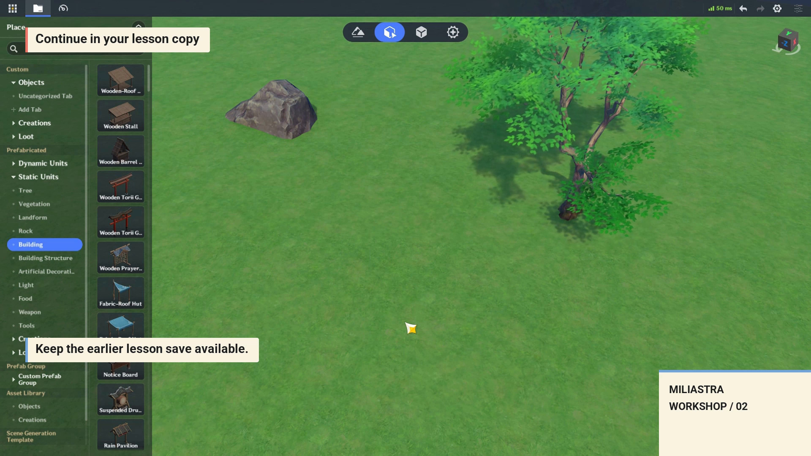
00:4902. Plan before adding detail
Look at the empty ground beyond the gap. Imagine a person walking from the starting area towards one recognisable place. That line is our route. Leave enough space beside it for the character and the camera. We're going to place scenery around this space, rather than filling it and trying to cut a route through later.
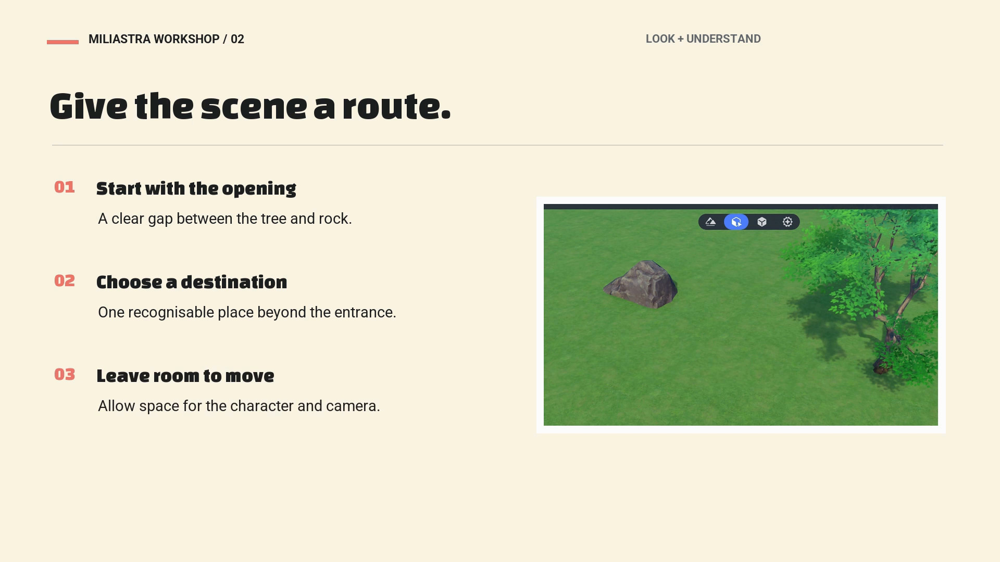
01:0603. Use a Stone Road group
In the Place library, open Static Units, then Landform, and choose Stone Road. This model is a group of separate flat stones. It gives us a visual trail without covering the whole field. Check its name on the right so you know which object you're editing. These are scenery objects; we aren't adding any gameplay logic to them.
Official guide: Interface Guide / Entity Placement
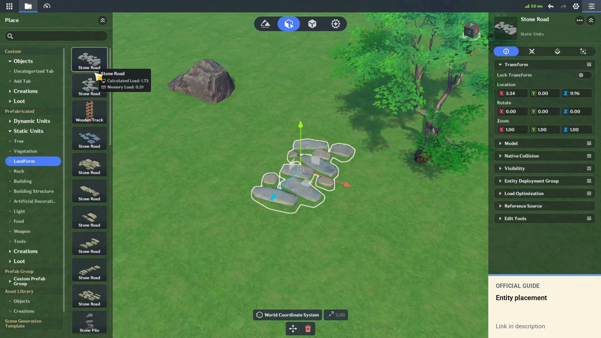
01:4605. Give the route a destination
Now open Building and choose Rain Pavilion. Its roof and posts make a small, recognisable destination. Put it beyond the tree and rock, where you can see it through the opening. A focal point is simply the place you want someone to notice first. It doesn't need to be the largest or most detailed object in the scene.
Official guide: Interface Guide / Entity Placement
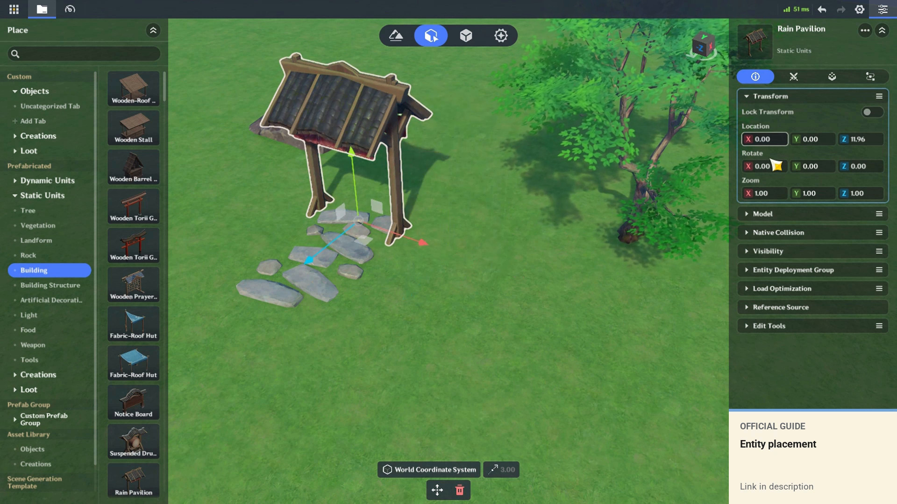
02:0406. Keep the destination inside the ground
Check how much ground remains behind and around the pavilion. If your destination is too close to the edge, bring it back before adding more detail. Here, I move it closer to leave a more useful margin. We still need to test the approach in play mode. An attractive editor view doesn't prove that the walking route works.
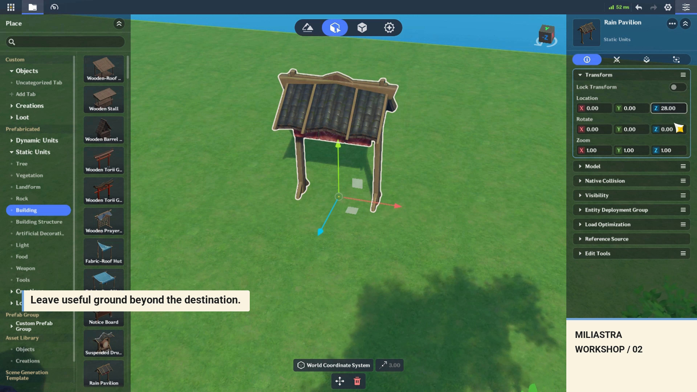
02:2507. Continue the trail
Add a few more Stone Road groups along the route. Move each new group into place before adding another, so you can keep track of what is selected. Small changes in spacing make the trail feel less mechanical. Keep the intended direction readable. The grass between the groups is part of this path; we're making a trail, rather than a perfectly tiled pavement.
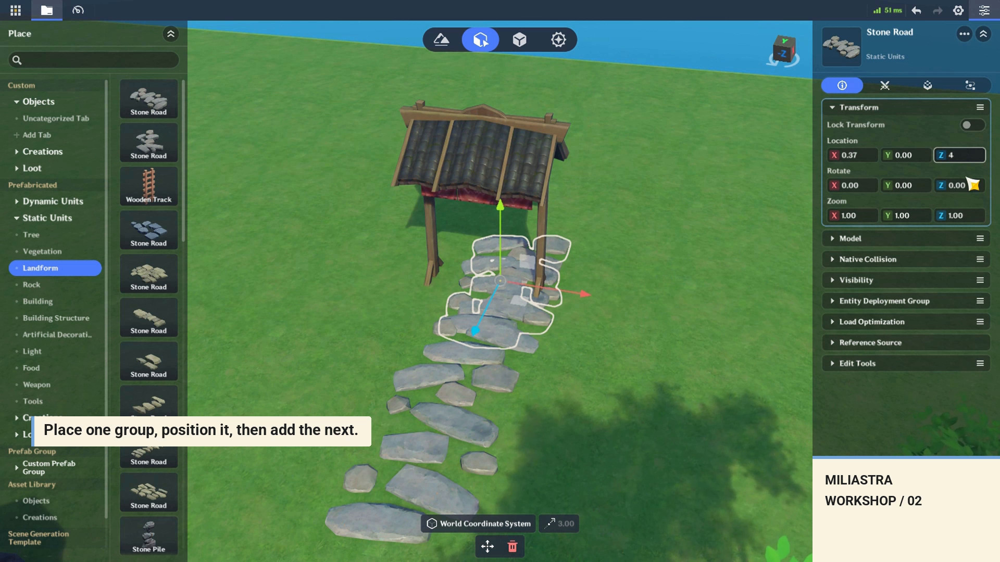
03:0108. Frame the foreground
Use another Arbor to frame the opposite side of the approach. Select its placed instance, then adjust its location. Here, I keep its original size. Leave the central opening visible, and compare its silhouette with the first tree. Different models don't always need the same scale. If you resize a tree, keep all three Zoom values equal when you want to preserve its proportions.
Official guide: Interface Guide / Entity Placement
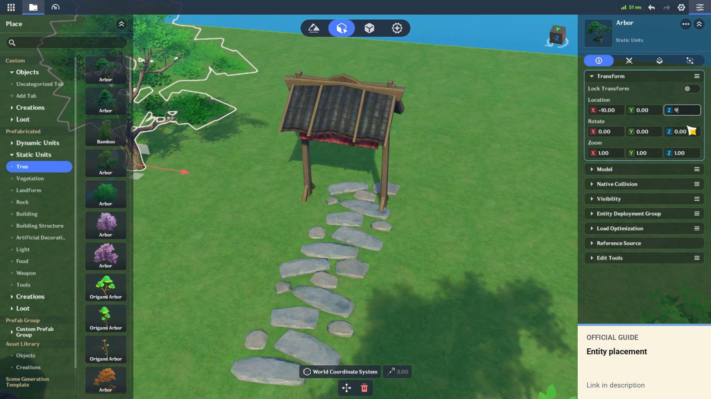
03:2809. Foreground, middle ground and background
Think in three distances. The foreground sits close to the viewer and frames the entrance. The middle ground leads the eye along the trail. The background sits behind the destination and stops it looking isolated. These are roles in the picture, rather than three exact distances you must measure. We'll use a few trees at each distance, with open space between the groups.
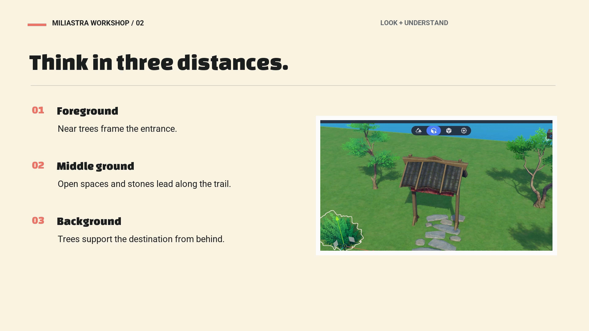
03:4910. Vary the silhouettes
Choose a different Arbor shape for some of the later trees. Change direction or size where it improves the outline, and leave uneven gaps between the trunks. Repeating the same tree at identical intervals can look like a fence. We want small groups with enough variation to feel natural, while keeping the pavilion easy to find. More objects won't automatically make the composition better.
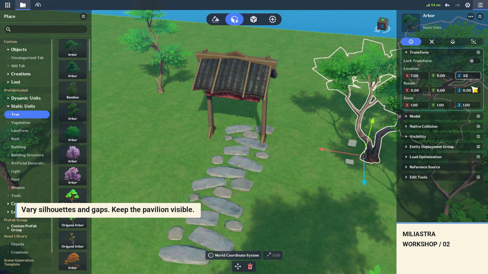
04:2411. Connect the trees to the ground
In Place → Static Units → Vegetation, choose Shrub and place it. Select the instance, confirm its name, then adjust its Location outside the central walking space. If you scale it, use equal X/Y/Z Zoom to preserve its proportions. In the recorded example the third Shrub uses 0.7 on all three axes; that size is optional.
Official guide: Interface Guide / Entity Placement
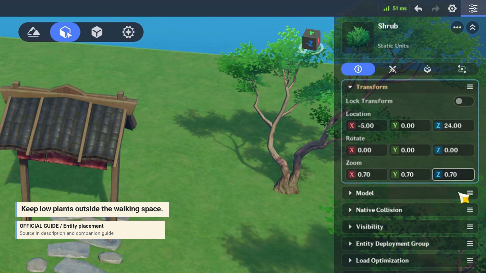
05:0112. Check the focal point
Look towards the pavilion again. Can you still recognise its roof and opening? If a tree or a branch hides the important part, move that piece of scenery aside. Don't solve every gap by adding another object. Sometimes removing an obstruction, or leaving a quiet patch of ground, makes the destination much clearer.
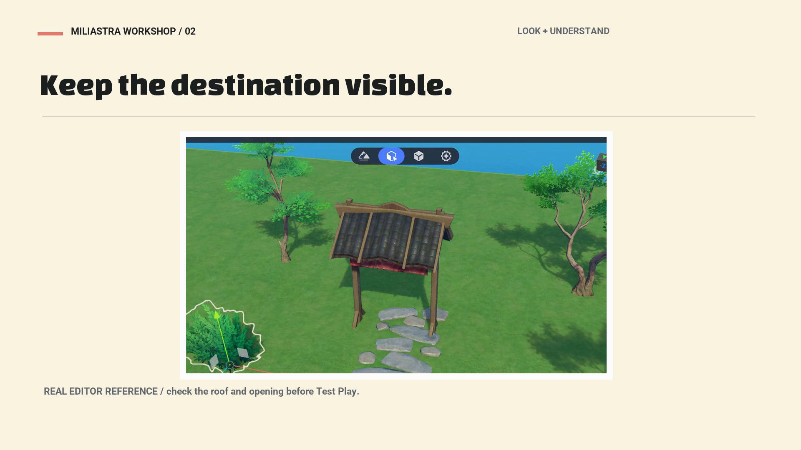
05:2013. Read the scene at player height
Click empty ground so the keyboard is not typing into a field. Lower the editing camera carefully with Q and use right mouse plus mouse movement to adjust the view. If movement is too fast, lower Quick Settings → Camera Vertical Speed first. This pickup uses an unchanged, separately imported copy of the same layout. An editor view checks composition; Test Play checks the character's view and movement.
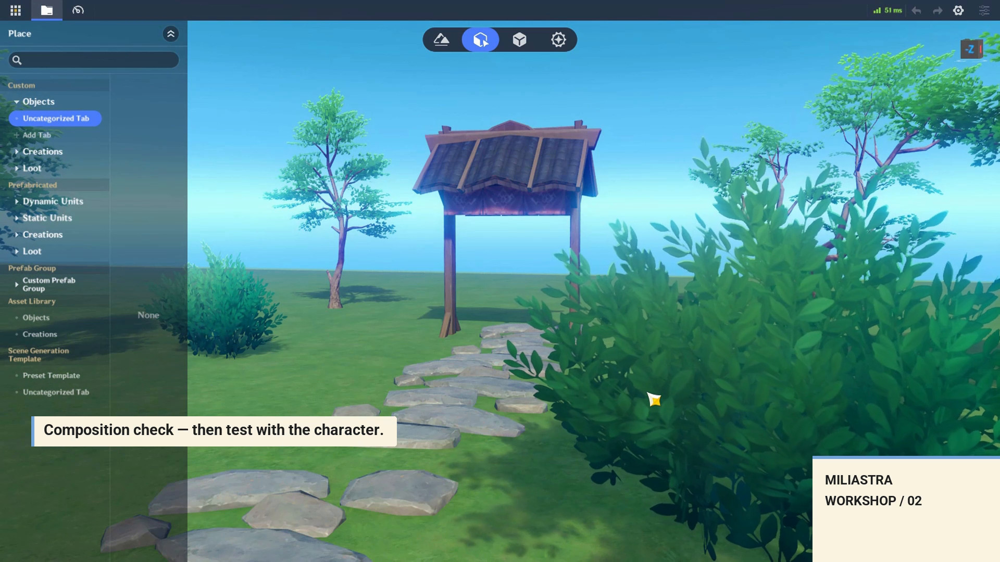
05:4214. Save and start a private Test Play
Open System Menu → Quick Save and wait for Saved successfully. Choose Test Play. If Render Navmesh appears in this scenery-only example, Direct Upload prepares the private test. In Test Play Options, confirm the English test language and choose Start Game. Wait for the character to appear. This prepares a private test session; it does not publish the stage.
Official guide: Interface Guide / Test Play
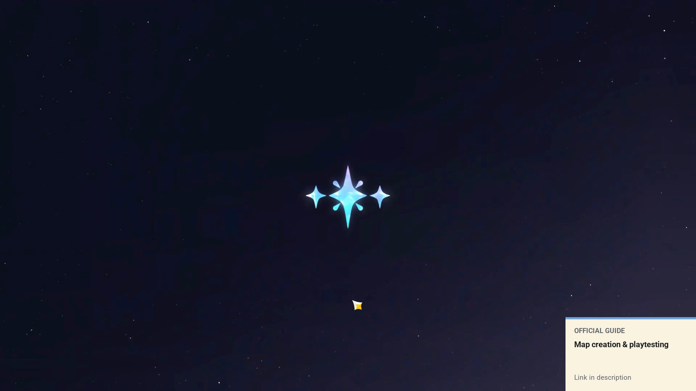
06:1015. Walk the route
Walk towards the opening, release the movement key to stop, and look at the destination. Then continue along the stones. I'm checking that the route stays on the ground, that the scenery leaves room to pass, and that the pavilion remains a useful landmark. Check your own route at normal walking height. If something blocks you, return to the editor and move that object.
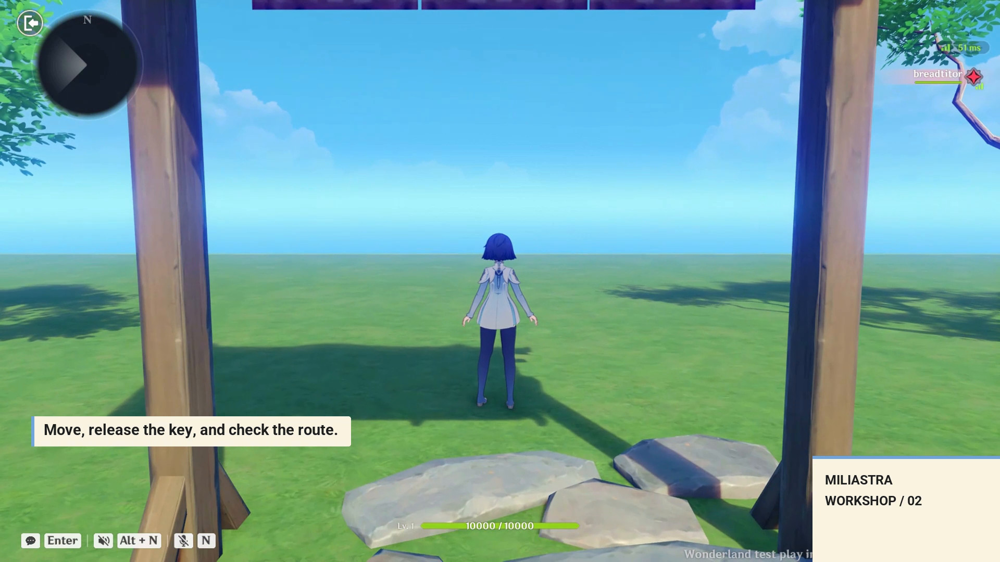
06:3916. Check the return view
At the destination, stop and turn around. The scene should still make sense from this direction. Look for an obvious way back, objects that seem to float, and places where foliage cuts across the camera. A single attractive screenshot only covers one view. This short walk gives us a better check of the space we're building.
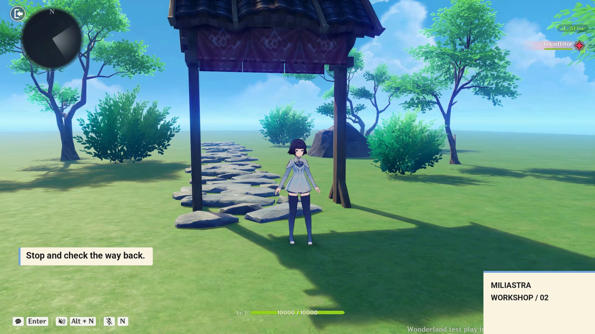
06:5817. Compare the arrangement
Compare the simple starting scene with the woodland from a similar viewpoint. The useful difference is the relationship between the objects: the stones suggest a route, the near trees frame it, and the background supports the destination. The coordinates are still just one layout. You can make a wider clearing or a different focal point while using the same ideas.
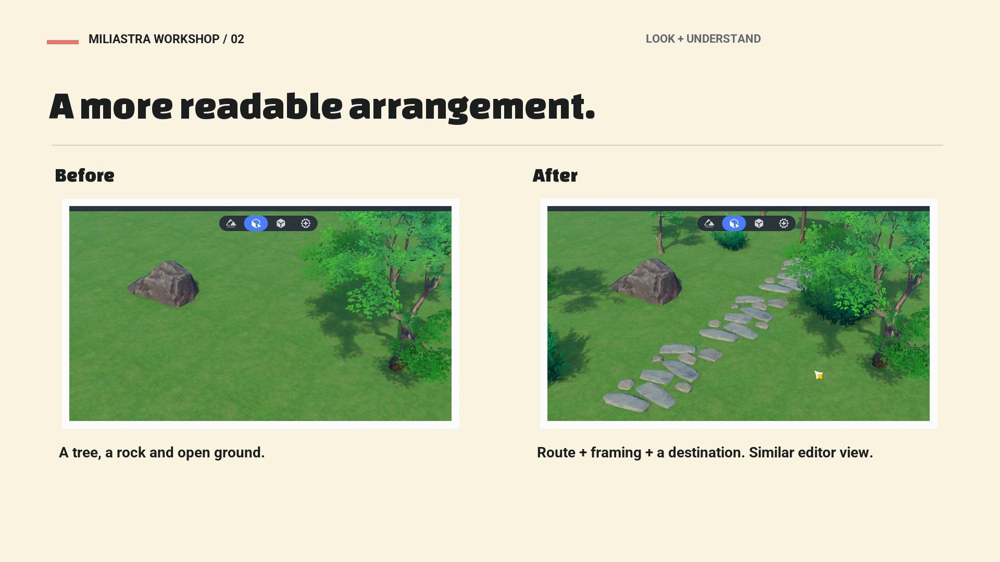
07:1918. Keep the finished lesson copy
Leave the test with Abandon Challenge, then Exit to return to the editor. This lesson has no completion rules, so an Incomplete screen after abandoning is expected. Quick Save and wait for the acknowledgement. Keep this finished lesson copy for the next episode.
Official guide: Interface Guide / Test Play
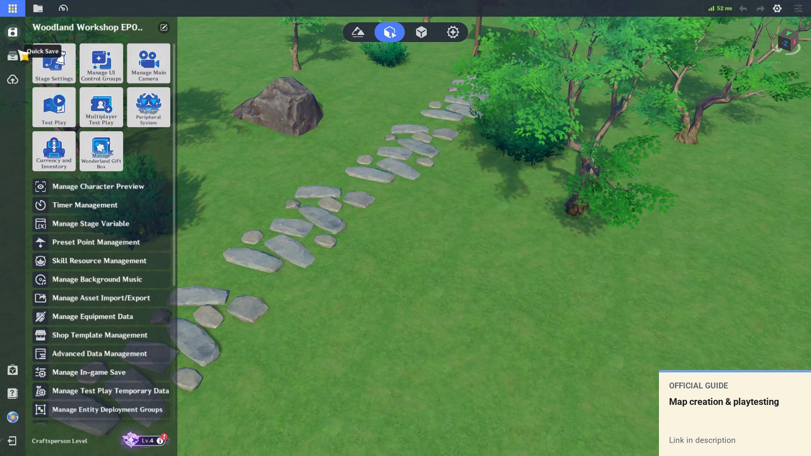
07:4519. Check your own landscape
Before you move on, try this without looking at the recorded numbers. Point out the route, the destination, and the three distances in your own scene. Then walk from the start to the destination and back. If the direction is clear and you can move comfortably, you've achieved the purpose of this lesson.
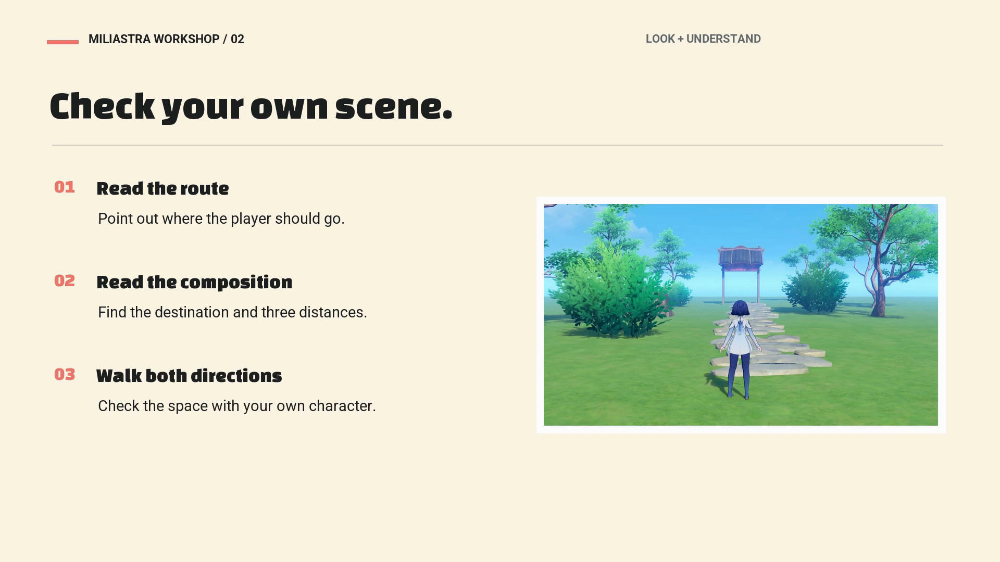
Official references
These explanations use our own words. Native interface labels are shown in the images. A short test covers the actions shown; test the important systems in your own version after changes.